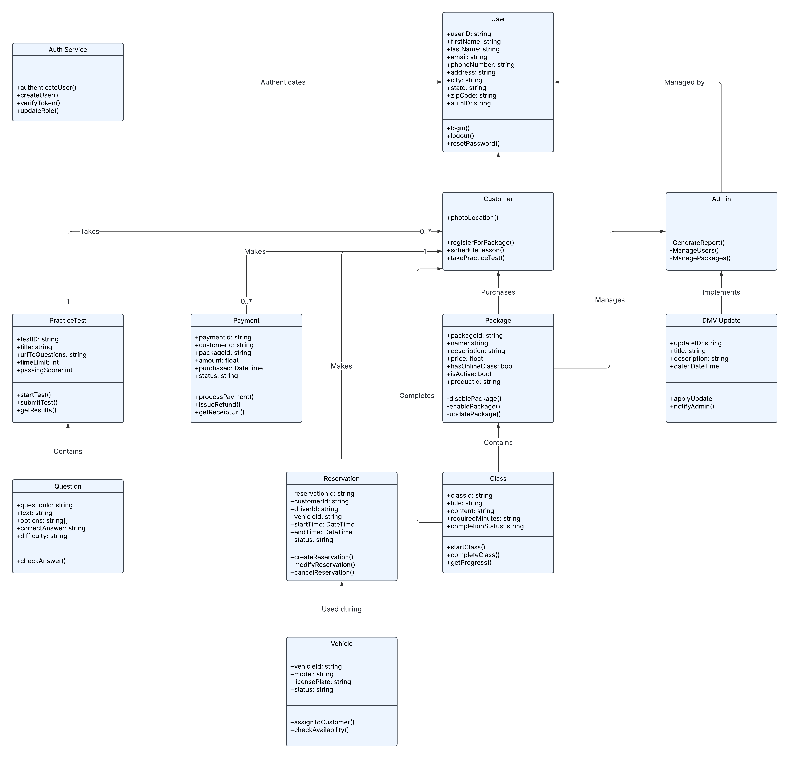

Driver Pass System Design Enhancement
The system design enhancement is an and update to the original requirements of the DriverPass system made in CS255. Originally the document only contained technical requirements and the four UML diagrams-Use Case, Activity, Class, and Sequence diagrams. This enhancement added design constraints, API endpoints, and a component diagram were added to be more in line with my current skillset. In addition the class diagram was also updated to reflect large changes to structure and the addition of the authentication and payment services.
Enhancements
Starting with the design constraints the requirements for the application and how it would run were added. This means in addition to some overlapping technical requirements, the mobile compatibility, dmv compliance, and offline access constraints were added as well. The API endpoint addition includes user management, authentication, payment processing, reservation management, and report generation. Additionally, the component diagram reflects the client machine having two main interfaces, a database with redundancy, application services, and the two external services for authentication and payment processing.

Reflection
I selected this artifact to demonstrate my growth in design and documentation over the course of my time at SNHU. These requirements are more in-line with real world expectations and provide more detail to the previously general specifications. During this artifact I reflected on translating user requirements into specifications and implementation details. The largest challenge was ensuring the new components didn't stray to far from the original system, although I recognize the need for improvement in terms of security implementation details and performance considerations.